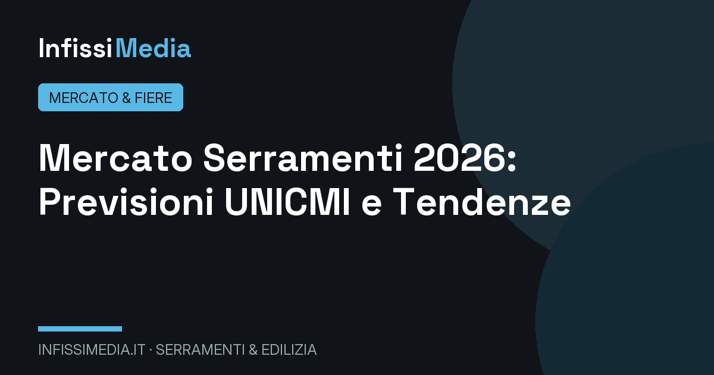
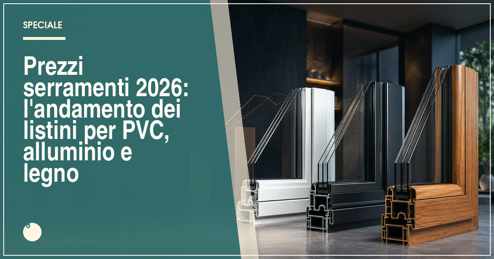
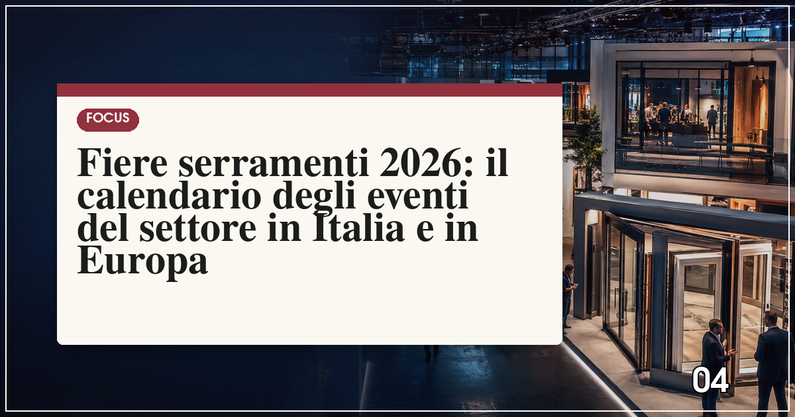

Mercato serramenti 2026: le previsioni UNICMI e le tendenze del comparto
Tra recupero edilizio e riqualificazione energetica: dove va il mercato italiano dei serramenti.
Numeri, tendenze e appuntamenti del comparto: analisi del mercato italiano dei serramenti, andamento dei listini e il calendario completo delle fiere dove incontrare i produttori.

Tra recupero edilizio e riqualificazione energetica: dove va il mercato italiano dei serramenti.

Materie prime, energia e domanda: l'analisi dei prezzi per chi deve comprare.

MADE Expo, SAIE, Klimahouse, Fensterbau: dove e quando incontrare i produttori.